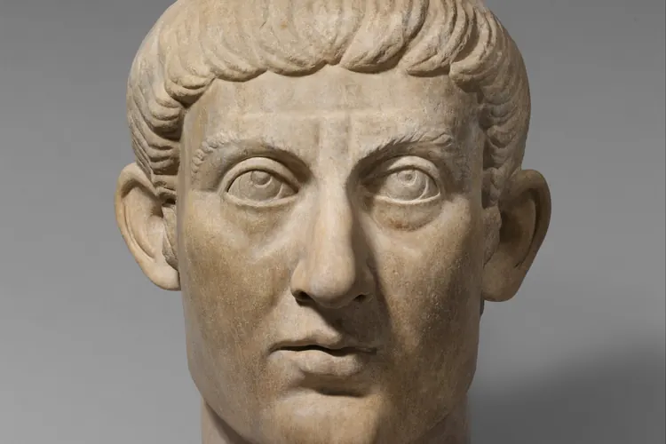

Мьюинг после хайпа: что осталось от главного тренда
Тренд обещал чёткую линию челюсти благодаря положению языка, а спустя несколько лет от него остались разумные привычки и ни одного доказанного чуда.

Несколько лет назад мьюинг был повсюду: в коротких роликах, в комментариях, в подписях к снимкам «до и после». Идея звучала просто: прижми язык всей поверхностью к нёбу, держи так весь день, и со временем лицо станет рельефнее, а линия челюсти чётче.
Название практика получила по фамилии британского ортодонта, но массовой её сделали соцсети. Сейчас хайп схлынул, а вопросы остались. Мы попробовали отделить разумные привычки от громких обещаний.
Что в мьюинге разумно
Сама рекомендация держать язык у нёба, а губы сомкнутыми, не выглядит экзотикой. Примерно так специалисты и описывают нормальное положение языка в покое. Привычка дышать носом, а не ртом, тоже считается полезной: воздух по пути согревается и увлажняется.
Ещё один здравый элемент тренда касается осанки. Если голова постоянно выдвинута вперёд над телефоном, шея и нижняя часть лица выглядят иначе, чем при ровной спине. Работа над осанкой меняет то, как вы держите голову, а значит, и то, как вы выходите на фото.
Чего наука не подтвердила
Главное обещание мьюинга было таким: взрослый человек может заметно изменить форму челюсти одним положением языка. Надёжных исследований, которые бы это подтверждали, нет. Рост лицевого скелета у взрослых в основном завершён, и истории о резком преображении остаются историями.
С детьми и подростками картина сложнее. Пока лицевой скелет растёт, на его развитие, как считают специалисты, влияют и привычка дышать ртом, и положение языка. Поэтому прикус ребёнка должен оценивать ортодонт, а не родитель с роликом из ленты.
«Держать язык у нёба нормально и даже полезно. Но я ни разу не видела, чтобы у взрослого пациента язык сам по себе перестроил челюсть. Проблемы прикуса решают лечением, а не упражнением из роликов.»
Отдельно стоит сказать об агрессивных ответвлениях тренда, например о привычке бить по костям лица твёрдыми предметами. Красивее лицо от этого не становится, а риск травмы вполне реален. Такой ролик лучше закрыть, а если удар уже был и что-то болит, стоит показаться врачу.
Почему снимки «до и после» обманывают
Главным аргументом тренда были фотографии. Проблема в том, что лицо на снимке сильно зависит от условий съёмки, а «до» и «после» почти никто не снимает одинаково. Чаще всего меняется сразу несколько вещей:
- Ракурс: камера чуть ниже или выше меняет пропорции лица.
- Свет: боковое освещение рисует скулы и челюсть тенями.
- Положение головы: выдвинутый вперёд подбородок натягивает кожу под челюстью.
- Вес: даже небольшое похудение делает контур лица чётче без всякого мьюинга.
Многие авторы таких роликов искренне верят в результат. Но когда одновременно меняются свет, ракурс и вес, приписать разницу языку невозможно. Честное сравнение требует одной и той же камеры, одинакового света и позы, а такие пары снимков в ленте встречаются редко.
Если вас беспокоят прикус, щелчки в челюстном суставе, храп или постоянно открытый рот, начинать стоит с ортодонта или ЛОР-врача, а не с упражнений из ленты. Такие симптомы требуют осмотра, а не самолечения.
Что в итоге осталось от мьюинга? Сомкнутые губы, спокойный язык, дыхание носом и ровная спина. Это хорошие привычки, просто не стоит ждать от них нового лица. А если нынешнее лицо вас устраивает, это тоже хороший итог.